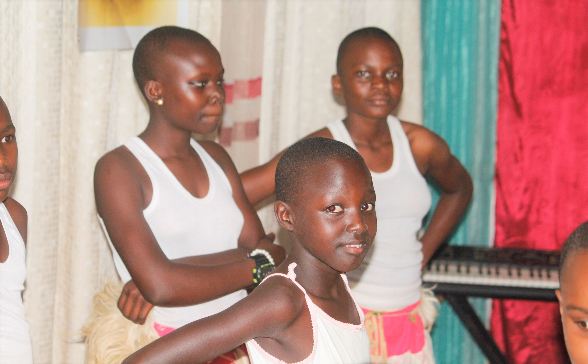
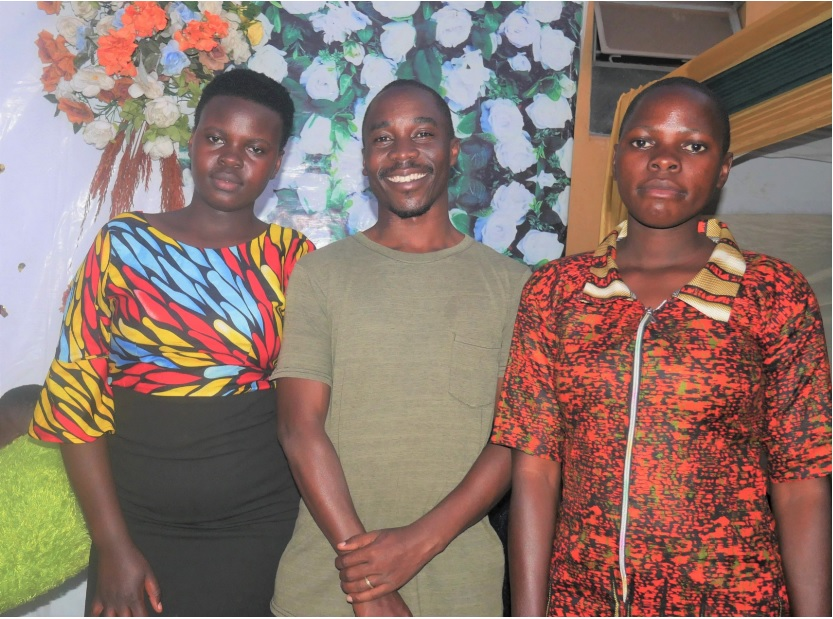
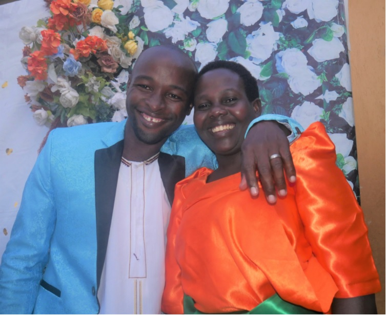

Welcome to The Lord's Great Comission Church, Gayaza (LGCC, Gayaza). Welcome to fellowship with the Holy Spirit to execute the Great Commission instructed by our Lord, Master and Savior Jesus Christ. All that entails bringing the Gospel to all people, training believers until they go and also testify of God's Love and Salvation to others is carried out here. It is our commitment to see that we bring people to Christ, Inspire and Train them about Christ Jesus and equip them to go and also do the same job. Welcome to a place about God's Kingdom Business.
"Welcome to our church family! May God bless you." - Senior Pastor
Most of what we become in life is nurtured at an early age. We are dedicated to the christian care of the children reaching out to them with a message of salvation through their language. We hold Sunday School Classes, hold birthday parties, do school visits, Sunday School evangelism, and Annual Bible Quiz sesions
"Train up a child in the way he should go." - Sunday School Teacher
Joyful Youths; Growing Ministry. At LGCC we see that the youths are given an opportunity to bring out who they are. We nurture them through having them get involved in all church actiivities. They lead in Praise and Worship, they lead in evangelism campaigns, aprticipate in Inter--church Sports and Music Competitions, hold Bible Quiz moments, and help each other with skills learning among other projects. We encourage them to find their purpose in a Christian direction.
"Be strong and courageous, for the Lord is with you." - Youths Leader
How wonderful when two meet together to make a home when God is at the centre of it all. We encourage church members to begin their relationships with God. At LGCC people get holy matrimony. It is something that every maturing youths is excited about. Our Marrieds Department continually organises fellowships, seminars, workshops, inspirational moments, prayers specifically to address issues in a home.
"Love one another, as Christ loved the church." - Marrieds Leader
"Spreading the Gospel to all nations"
"Go and make disciples of all nations." Matthew 28;19-20. This is the main purpose of the church - we ought to preach the gospel first to our families, then neighbors and to the far places. At LGCC we use all availbale avenues to bring the good news to people. We do door to door preaching in our neighborhood we do street preaching, open air, we visit people in plaves of gathering like schools, prisons, organisations and health centres. We visit different places in the different parts of Uganda and the world at large sharing the gospel, learn from each other, and encouraging fellow ministers
In our quest for the Kingdom of God, we discover and commit the importance of the quality of worshipping in spirit and truth. Our Choir Team is daily commiting to the growth of always leading the congegration in true worship and praise in all our gatherings.
It is at home that we spend most of our time. What we do in the private of our homes is truly who we are. At LGCC we encourage Home prayer Felowships for family members most especially in the evenings where they can revise on the shared sermon at church, study the bible, pray for family needs and worship together.
"Where two or three gather, there am I." - Pastor
Phone: 256772 350850
+256 704455622
Email: lgccgayaza@gmail.com
Address: Gayaza B, behind Balibawo Hospital